11 Nov 2026
Initial literature notes from day 1, for the team to review together. These are readings of other people's papers, not results from our own experiments. Nothing below has been run on NERO yet.
Data quality keeps coming up
In the ALOHA paper, results track the quality of the demonstrations.[2] Imitation-learning errors compound over time[2], which is why auditing and cleaning the dataset is a core stage of our planned pipeline, not an afterthought.
Chunking targets drift
ACT's core trick, predicting a short sequence of actions at once, directly attacks compounding error[2], and its docs describe training in hours on one GPU[3]. One option to put to the team: ACT as our first baseline.
Diffusion handles "more than one right move"
When demos contain several valid strategies, a plain regression policy averages them into a bad one. Diffusion Policy models the whole distribution instead, using iterative denoising at inference.[4]
Foundation models as a later step
GR00T shows where the field is heading: one generalist model, post-trained per robot[5]. At 2B+ parameters it is far heavier than ACT's ~80M[5][3]. One proposal: revisit it only after a smaller baseline is working.
Plain RGB is a legitimate starting point
ALOHA reaches its reported results with commodity webcams and no depth sensor.[2] Open question for the team: would adding a depth camera help NERO enough to be worth the extra setup? We have not tested this yet.
Existing tooling: LeRobot
Hugging Face LeRobot ships dataset formats, training scripts and ACT out of the box.[3] One proposal for the team: build our pipeline on top of it rather than starting from scratch.
12 Nov 2026
Environment variables
This session we worked on Antigravity in Obsidian, learning about environment variables and researching how they could apply to our pipeline. The full write-up document is still in progress (about halfway) - we'll link it here once it's finished. The cards below are our to-learn list from the session, written up simply so the whole team can follow.
What an environment variable is
A named setting that lives outside the code; the program reads it as it runs. The twelve-factor app guide defines config as everything likely to change between deploys - credentials, resource locations - and says to store that config in env vars.[6] Because the value sits outside the code, behaviour can change without editing the code itself.[6]
Env vars are not environments
Two ideas that sound the same. An environment is where the software runs - a laptop, a test server, the computer on the arm.[7] An environment variable is one setting inside that environment. The same code can behave differently in each environment purely because the variables differ.[6]
The main types of environment
Local: your own machine while you build. Development: the sandbox where changes are tried out. Testing: where new code gets checked before release. Staging: a mirror of production for a final rehearsal. Production (live): the real thing that end users - or in our case the robot - actually run on.[7] Hosted means it runs on a server somewhere else; local means it's on the machine in front of you.[7]
Why environments matter for NERO
Our pipeline could end up running in more than one place - for example a training laptop and a computer driving the arm. Settings like dataset paths, camera device names or API keys could differ between them, and env vars would hold those differences so the code itself stays identical.[6] They also keep secrets out of the repo - env vars are much less likely to be committed by accident than a config file.[6]
Open question: what's in NERO's environment?
We haven't yet confirmed what was actually added into the environment of the robotic arm - which variables exist on its machine and what they contain. Question to take back to the team: what was added, and why those particular ones? Day 3 update: the new document now lists reported settings below; these have not been checked directly on the arm computer.[D3]
Key concepts: chunking & temporal ensemble
Chunking
Instead of predicting the arm's next single move, ACT predicts a chunk: the next k moves at once. That shrinks the task's effective length k-fold, which fights compounding errors - small mistakes snowballing over time.[2]
Where chunking comes from
The idea is borrowed from neuroscience, where "chunking" describes individual actions being grouped together and executed as one unit - like "grasp the corner of the wrapper" as one move instead of many tiny ones. ACT applies the same idea to robot policies.[2]
Temporal ensemble
A plain chunker only looks at the cameras every k steps, which can make motion jerky. ACT's fix is to query the policy every timestep so the chunks overlap, then average the overlapping predictions with an exponential weighting scheme. The motion comes out smoother, with no extra training - just a little extra compute at run time.[2]
13 Nov 2026
Our Day 3 document
The original 10-page session document, in its supplied order and layout, with the original wording, screenshots and equations. One machine-specific home path is covered for privacy. This is our working document: its research attributions, thresholds, dataset counts and proposed checks are not independently verified experiment results. [8]
The document below is the same document set directly on the page - original wording, bullet points and equations, with images only where the original has screenshots or equation graphics. Open the original document (PDF). Today's photos and video remain under Ideation & development.
Environments
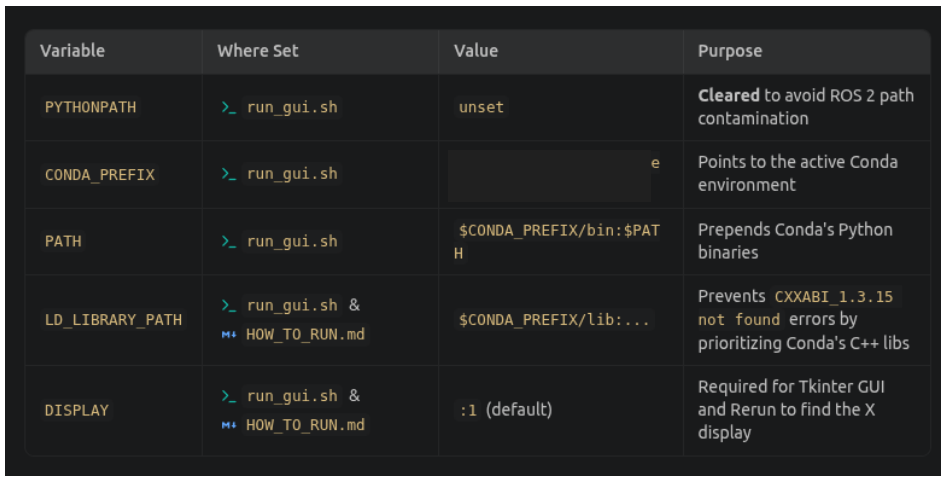
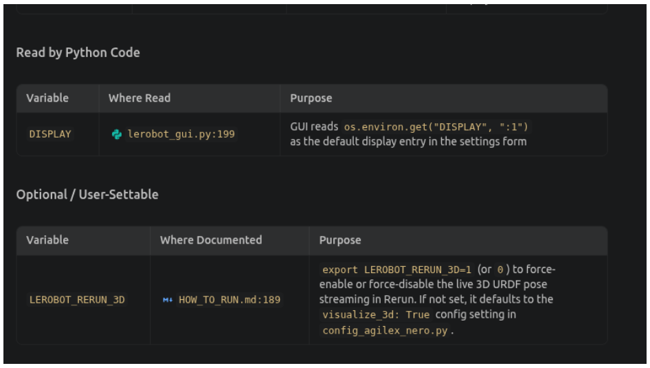
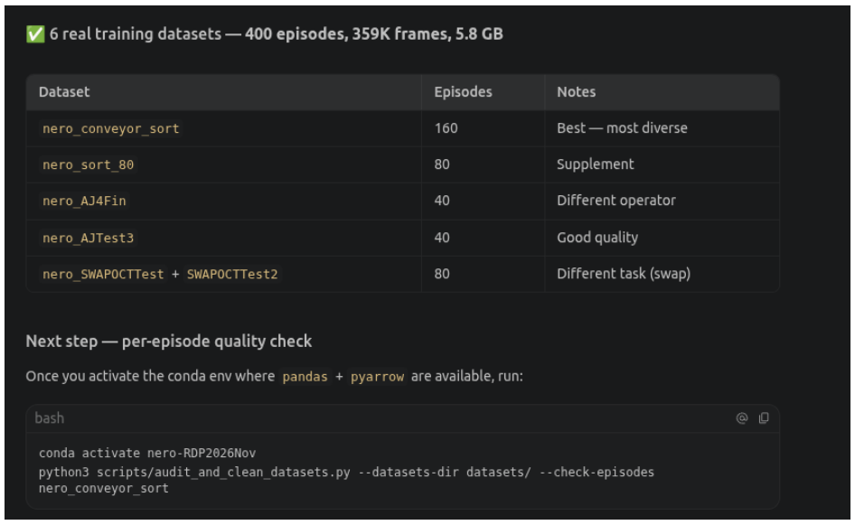
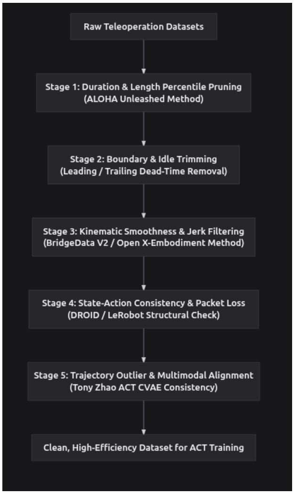
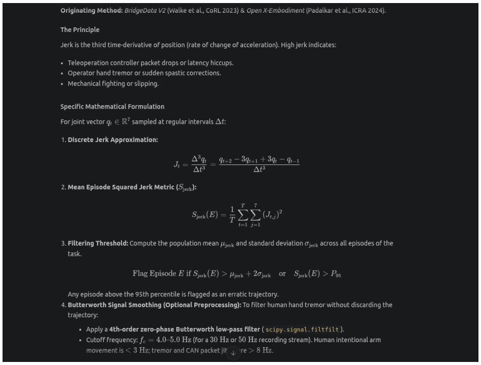
Our notes
Stage 1: duration and length percentile
- To get the absolute best AI performance, some researchers are ruthless and delete everything that isn't in the fastest 50% or 75% of recordings, ensuring the AI only learns from highly confident, direct movements.
Stage 2: cut out pauses
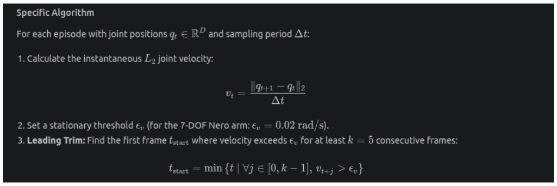
- Measuring Speed (vt): The algorithm calculates the physical speed of the robot's joints at every fraction of a second.
- The Movement Threshold (εv): It establishes a baseline speed limit (0.02 rad/s). Any movement slower than this is considered "sitting still" or just sensor static.
- Leading Trim (Cutting the Start): The math scans the beginning of the video to find the exact moment the robot moves faster than the threshold for 5 frames in a row. It keeps a tiny fraction of a second right before that moment as a buffer, and deletes all the dead air before it.
- Trailing Trim (Cutting the End): It scans the end of the video to find exactly when the task is finished and the robot's speed drops below the threshold for good. It deletes all the dead air at the tail end of the recording.
Stage 3: Kinematic smoothness
Jerk
Equation:
Jt: The calculated Jerk score at the current time step (t).
q (Position variables): The q variables represent the joint's actual position at specific times.
- qt is the current position.
- qt−1 is the position one frame in the past.
- qt+1 is the position one frame in the future.
- qt+2 is the position two frames in the future.
The Numerator (qt+2 − 3qt+1 + 3qt − qt−1): This is a mathematical shortcut called a "third finite difference." To get jerk, you have to measure the change in position (velocity), then the change in velocity (acceleration), and finally the change in acceleration (jerk). The multipliers (the 3s and minus signs) are the direct mathematical result of stacking those three layers of differences into one single formula.
The Denominator (Δt3): Δt (Delta t) is the set time interval between each recorded frame. Because jerk is the third level of change over time (position → velocity → acceleration → jerk), the time gap must be cubed (Δt × Δt × Δt) to scale the final number correctly.
- Differentiated acceleration (m/s^3)
- Third time derivative of position
- High jerk indicates sudden movements/hand tremor/hiccups etc
Mean jerk
- calculates a single score representing the overall "jerkiness" for an entire recorded episode (like one complete task attempt).
- Square ensures positive -> penalise large ones even more -> averages over joints and time steps
Filtering threshold
- step explains how to decide if an episode is too jerky and should be flagged.
- calculates the average jerkiness (µjerk) and the variation (σjerk) across a whole dataset of episodes.
- An episode is flagged as an "erratic trajectory" if its jerk score (Sjerk) is significantly higher than average (specifically, if it's more than two standard deviations above the mean, or above the 95th percentile).
Butterworth
- method to clean up the data before analysis, specifically to remove unintentional human hand tremors.
- cutoff frequency is set between 4.0-5.0 Hz because intentional human movement is usually slower (< 3 Hz), while tremors or data errors (jitter) are usually faster (> 8 Hz).
- Limitation: complementary to other methods because it only detects jerkiness but not incomplete recordings
Stage 4: State-Action Consistency & Hardware Health
Originating Method: DROID (Khazatsky et al., 2024) & LeRobot Dataset Specification.
The Specific Checks
- Timestamp Monotonicity and Dropped Packets
- checks for recording lag or missing data.
- a standard recording rate of 30 frames per second (FPS), a new data frame should arrive every 33.3 milliseconds (Δtnominal).
- equation Δtk calculates the actual time between two frames. If the gap between any two frames is larger than 50 milliseconds (1. 5 × Δtnominal), it counts as a dropped packet. If an episode has more than 3 of these dropped packets, the data is too stuttery and is thrown out.
- Action-State Tracking Divergence (ensure s that follower followed and did not get stuck or stalled)
- at,j − st,j: It takes the Action (a) the human commanded for a specific joint (j) at a specific time (t) and subtracts the actual State (s) where the robot's joint actually is.
- maxj∈[1..7]: A robotic arm has 7 joints. This tells the system to calculate that error distance for all 7 joints, and then only look at the one joint with the
max(biggest) error. - δt (Lowercase delta t): This final score is the largest single error across all 7 joints at that specific split-second.
- calculates the difference between the commanded action (a) and actual state (s) across all 7 joints, keeping only the largest error (δt).
- if that error stays above 0.30 radians for more than 10 frames in a row, it means the robot is failing to obey commands eg (it collided with an object, a motor stalled, or the connection dropped)
- Task Completion Proxy (Gripper State Delta) verifies that the robot even opened the hands to attempt task
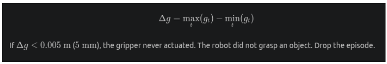
- It checks the total range of motion of the robot's gripper (its "hand").
- subtracts the tightest the gripper ever closed (
min) from the widest the gripper ever opened (max) during the entire episode. - 0=fail
- In manipulation/pick-and-place tasks: Δg=maxt(gt)−mint(gt)\Delta g = \max_{t}(g_t) - \min_{t}(g_t)Δg=tmax(gt)−tmin(gt)
Stage 5: Trajectory consistency and Multimodal Collapse Prevention
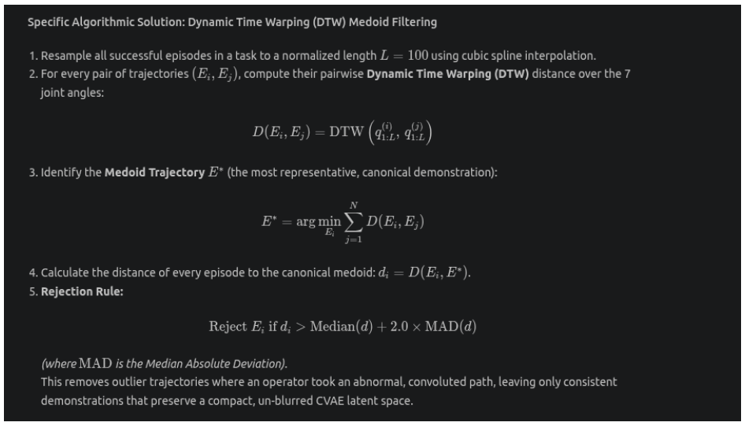
Time warping
- Dynamic Time Warping (DTW) is a mathematical algorithm used to measure the similarity between two sequences (like movements, audio, or video) that happen at different speeds.
- eg two people saying the word "hello." One says it quickly ("hello"), and the other drags it out ("helllooooo"). A standard, rigid computer comparison would look at them second-by-second and think they are completely different because the audio waves do not line up perfectly in time.
- DTW solves this by "warping" or stretching the time axis. It intelligently matches the corresponding parts of the data together—linking the "h" sound to the "h" sound, and the "o" to the "o"—regardless of how much time passed between them.
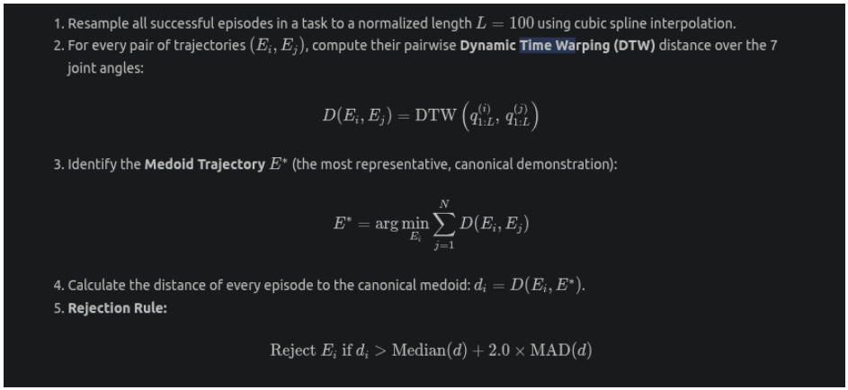
- Variables: q(i) and q(j) represent the two different robot recordings (like Person A and Person B drawing the "S"). The 1: L means it is looking at the full timeline of both recordings, from frame 1 to frame L (100)
- The algorithm creates a 2D mathematical grid. The bottom axis is the timeline of Episode i (1 to 100 frames), and the side axis is the timeline of Episode j (1 to 100 frames)
- Warping (Finding the Path): The algorithm must draw a line through this grid from the bottom-left (start of the video) to the top-right (end of the video).
- The Final Score (D): The algorithm tests all possible paths through the grid to find the "path of least resistance"—the route that adds up to the lowest total difference between the two poses. That lowest possible total score becomes D.
- A rigid, second-by-second comparison would force this line to be perfectly diagonal.
- DTW allows the line to bend. It can step horizontally (advancing time in Episode i while holding Episode j still) or vertically (advancing Episode j while holding i still). This bending is the actual "time warp."
Medoid trajectory: most standard demonstration
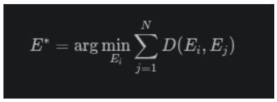
- E* (E-star): The final answer. This represents the "Medoid Trajectory," which is the single most standard, textbook demonstration of the task.
- D(Ei, Ej): The Dynamic Time Warping (DTW) distance (difference in physical path) between one specific candidate episode (Ei) and another episode (Ej).
- N∑j=1 (Summation): The Greek letter Sigma (Σ) means "add everything up." It calculates the distance from the candidate episode (Ei) to episode 1, then to episode 2, all the way up to the final episode (N), and adds all those distances together into one massive total score.
- the algorithm takes one recording and calculates its DTW distance to every other recording, adding them up to get a total distance score. It repeats this for every single episode. The episode with the absolute lowest total score (the
arg min) is crowned the Medoid. It sits mathematically perfectly in the center of the group. - Medoid: the most centrally located data point in a cluster
The Rejection Rule
- statistical bouncer that throws away weird, wandering, or convoluted human demonstrations so they do not confuse the AI during training.
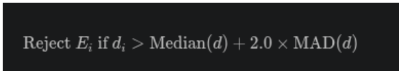
- MAD = Median Absolute Deviation
- It calculates the most centrally located data point in a clusterlates the distance (did_idi) of every individual episode to the Medoid.
- It finds the middle-ground distance across the whole dataset
- If a specific episode's distance is greater than the median plus twice the typical variation, it proves the human operator took a path that was too extreme or unusual. That episode is rejected and deleted.
training an AI model (like ACT) to control a robot, it learns by compressing human demonstrations into a mathematical "latent space" (using a Conditional Variational Autoencoder, or CVAE) and then decoding them back into actions.